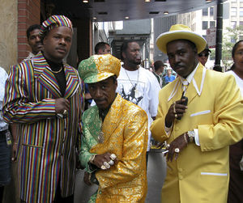
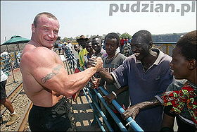

Negro (persona)
 De: La Frikipedia, la enciclopedia extremadamente seria.
De: La Frikipedia, la enciclopedia extremadamente seria.
| De la serie tribus urbanas del mundo:
|
| Negro (persona)
|
Ejemplo de la tribu

|
| Negro no rapero.
|
|
| Hábitat
|
Cualquier sitio
|
| Inteligencia
|
Alta (En estado de...)
|
| Frase favorita
|
Wassssa 'up men, Brooooo!, Homie, y todas las frases que digan en san andreas.
|
| ¿Peligroso?
|
No si no te metes con su raza (No importa si es blanco todos dicen que son negros)
|
| Obsesión
|
Pensar que todas la personas están en su contra y son racistas (¿Como me dijiste? ¿Me dijiste negro.....?)
|
| Notas
|
Si apagas la luz no se ven
|
Tipo de ser humano con color de piel café del que descendemos todos lo humanos incluso Adán y Eva (que en todos los cuadros lo pintan como rubios con ojos verdes) pero es falso eran negros según los estudios científicos de la evolución, aunque Ratzinger Z no quiere aceptar las teorías.
Siempre han sido una raza superior, lástima que esto no les ayudo en nada ya que los blancos los usaban como maquinas.
Los negros son muy abundantes o muy escasos dependiendo la zona. Se cree que en la antigüedad el hombre negro dominaba el mundo viviendo en armonía con su ambiente hasta que llego el hombre blanco siendo más chaparro y menos fuerte pero eso si a joderles el existir poniéndoles a punta de látigo las tareas que su cuerpo sin color raquítico no podía hacer.
Se ha referido que en la antiguedad era muy util ser negro ya que el ser humano solo salia en la oscuridad protegiendose asi de depredadores
El hombre blanco ha sido muy esclavista porque tenía miedo de que los negros fueran a pintar de un tono más oscuro su piel, como es el caso de Gringolandia, donde al haber tantas personas negras surgió el Ku klux Klan que era una secta gay con negras intenciones y complejos de inferioridad debido al reducido tamaño de sus genitales, entre sus miembros mas distinguidos se encuentra el presidente que tiro el cuetón radioactivo en Hiroshima Harry S. Truman.
Si se es negro hay que demostrarlo siempre, lo peor es no hacerlo ya que pueden surgir los peores monstruos que aterran a los niños desde Condolesa Reich.
Hay tres leyes importantes que todo asqueroso negro (especialmente norteamericano contiene en su ADN)debe cumplir:
- Todos los negros cantan.
- Son adictos al Kentucky Fried Chicken
- Ningún negro canta solo (en sus vídeos siempre viene algún "featuring").
- Todos los negros que cantan fueron pobres y ahora dan de comer a muchas disqueras.
Definiciones populares de negros
Esta es la definición dada por un negro:
"dah!"
Si vamos más allá del color de piel podemos decir que el hombre blanco ha causado mas problemas que beneficios en el mundo incluyendo a el inventor del queso para nachos que nunca avisó que era altamente engordador.
¿Sino porque las bolsas de basura son negras ?
¿Por qué la noche es tan tranquila?
¿Por qué las cosas buenas no son negras?
¿Por qué el Real Madrid es blanco?
¿Por qué a los negros se les dice negros si son de color caca café?
¿Por qué el color de la mierda es negro?
Negros Famosos
Algunos trabajos de negros
 Típicos
niggas negros que se creen pimps-hustlers.
Esclavos- Basquetbolistas
- Ladrones
- Raperos
- Hustlers (timadores o estafadores)
- Boxeadores
- Vendedores de drogas
- Ya dije esclavos?
- Pimps (chulos o proxenetas)
- Actores de películas
Pr0n
- Guardaespaldas
- ¿Presidentes?
- Están seguros que no eh dicho esclavos?
- Prostitutas
- Bailarinas de tubo
- Camareras de bares
Estos fueron los únicos trabajos que sean investigados, LOS ÚNICOS...
Todo lo que usted quiso saber sobre los negros
"
Lo del tamaño es un mito, en realidad los negros la tenemos normal: más o menos así de larga, como todo el mundo"
- Tu mejor amigo que te presta droga cada día
¿Qué tienes hoy para mí, negro?
- ¿Por qué cuando alguien dice me voy a vestir de negro es sólo el color de su ropa?
¿No debería vestirse con cadenas de oro y camisas hip hop?
- Tan bien definido que se aplica a la increíble estabilidad de un sistema Hasefroch
Esto lo veo muy negro
- Si a un negro le llamas negro, se te cabrea. Si a un blanco le llamas negro, te pega. Si a un chino le llamas negro, se pone amarillo chillón
¿Quién coño es un negro?
- ¿Por qué una raza débil a la que le da el sol y luego luego le da cáncer, presume o presumió ser la superior?
Esto es lo más contradictorio del asunto
- Las negras en muchos casos son superdotadas
¿Por qué demonios una mujer blanca no puede tener los atributos físicos de una negra?
No tengo ni puta idea
Chistes Curiosidades de Negros
 Los negros siempre son mas fuertes que los blancos...¿siempre?
- ¿A qué se parece un grupo de negros delante de una pared blanca?
- A un código de barras.
- ¿A qué se parece un negro con granos?
- A un Ferrero Roche.
- ¿Por qué los niños negros se asustan cuando tienen diarrea?
- Porque creen que se están derritiendo.
- ¿En qué se diferencia un negro de un balde de mierda?
- En que la mierda tiene un balde, y el negro no.
- ¿Tienes tú algo contra los negros?
- Yo sí, Spray.
- ¿Como es la manera de guiñar el ojo y sonreirle a un negro?
-Con un rifle de francotirador.
- ¿Qué es amarillo por fuera, negro por dentro y causa risa?
- Un autobús escolar lleno de negros cayéndose por un barranco.
- ¿Un negro entra en un bar con un loro en el hombro. El camarero se les queda mirando y dice:
- ¿De dónde lo sacaste?
Y el loro contesta:
- En Africa hay cantidad.
- Esto era un edificio que se estaba quemando, había dos personas en la ventana del octavo piso, uno blanco y uno negro. El blanco le dice al negro:
- Tírate !!
El negro le dice:
- Vamos los dos!!.
Se tiran y uno de los bomberos dice:
- Cojan al blanco que el otro ya se ha quemado.
- Qué son 100 negros en la Luna?
- Un eclipse.
- Qué dijo Dios cuando hizo el primer negro?
- Ostia! Creo que quemé uno.
- Cuánto se demora un negro en caer de un décimo piso?
- Qué importa!
- Por qué los negros no comen chocolate?
- Porque se muerden los dedos.
- Saben por qué uno de los tres reyes magos era negro?
- Quién creen que cargaba los regalos.
- Cuál es la diferencia entre atropellar a un negro y a un perro?
- Que antes de atropellar al perro se escucha una frenada.
- Por qué las chocolatinas tienen papel dorado?
- Para que los negros no se coman los dedos.
- Cuánto se demora el embarazo de una negra?
- 11 meses: 9 de gestación, uno de tostado y otro de encrespado.
- Iba un negro esclavo por el desierto y se encuentra con un genio que le dice que le pida tres deseos. El negro le dice:
- Quiero ser blanco, cadenas más livianas y mucha, mucha agua.
Y el genio lo convirtio en WC
- Qué es un negro en la nieve?
- Un blanco perfecto.
- Por qué los negros nunca se equivocan?
- Porque equivocarse es humano.
- El negro muerto.
- Por qué los negros tienen las palmas de los pies y de las manos blancas?
- Porque Dios los puso a cuatro patas y los pintó a pistola.
- Qué es un niño blanco con alas?
- Un angelito.
Y un niño negro con alas?
- Un murciélago.
- Viene el borracho por la calle buscando candela para un cigarillo y ve una luciérnaga y cree que es un encendedor y empieza...
- Oiga déme candela
Y la luciérnaga se movía y se movía.
- Oiga déme candela para este cigarillo, que me dé candela para este cigarillo!!
Se va la luciernaga y dice el borracho
- Negro tenía que ser!!
- Que son dos negros en un saco de dormir amarillo?
- Un Twix.
- Un negro pasa por un río y decide darse un chapuzón porque hace mucho calor. Desnudo se mete al agua poco a poco para acostumbrarse a la temperatura. De pronto se da cuenta que unos campesinos, escondidos detrás de unas piedras están mirando con curiosidad su verga que le llega a las rodillas. Molesto el negro les grita:
- Maldición, ¿qué pasa, que a ustedes no se les achica la polla cuando se bañan?
- ¿Sabes la diferencia entre polución y solución?
- Polución es tirar un negro al mar. Solución es tirarlos todos.
- ¿Cuánto se tarda en pintar una pared con negros?
- Depende de la fuerza con que los tires.
- Están en un noticiero y dicen:
- Ayer hubo una masacre en Africa, mataron 10.000 negros. AHORA CON MAS DEPORTES...
- ¿De qué esta hecha la mugre que tienen los elefantes dentro de las uñas?
- De negros lentos.
- ¿Qué es negro rojo negro rojo negro rojo negro rojo negro rojo y blanco?
- Un negro haciéndose una paja.
- ¿Qué es una negra embarazada?
- Un huevo Kinder
- ¿Qué hacen 4 negros en un coche rojo?
- Un Kit-Kat
- ¿Qué son 4 negros en un Mercedes Benz?
- Ladrones!
- ¿Qué es una negra embarazada de un blanco?
- Un Kinder Sorpresa!!!!!!
- ¿Cuál es el animal más rápido del mundo?
- Una gallina cruzando Africa
- ¿Cuál es el segundo animal mas rápido del mundo?
- El negro que corre a la gallina!!
- Un negro fue a pasear al zoológico. Recorriendo las jaulas al pasar frente a la del gorila, éste le llamó y en tono de confidencia, le preguntó:
- Amigo... ¿Cómo se llama tu abogado?
- Qué es lo primero que se le tira a un negro cuando se está ahogando?
- A su familia
- Llega un negro donde un doctor con un sapo en la cabeza. Y el doctor le pregunta:
-Señor, ¿que le pasó?
Y el sapo le contesta: - Es que me salió un negro en el culo
- ¿Por qué nunca se ha visto a un negro subnormal?
- Porque Dios solo castiga una vez.
- ¿Que son 1000 negros bañándose delante de las costas de Lepe?
- Los restos del Prestige.
- Un negro va con una vela (encendida...) por un sendero tan oscuro que no se le veían ni las intenciones y de repente se le aparece la Muerte y le dice
- Te ha llegado la horaaaa... vendrás conmigo...
El negro apaga la vela y le dice
- Si me encuentras...
- ¿Qué 3 cosas no puede conseguir un negro?
- Un ojo morado, labios gruesos y un trabajo.
- ¿Cómo evitar que un negro se ahogue en el río?
- Quitándole el pie de la cabeza.
- ¿En qué momento un negro es gente?
- Cuando alguien golpea la puerta del baño y pregunta "Hay gente?"
- ¿Porque los negros no van al cielo?
- Porque sino se nubla.
- ¿Cuanto tarda una negra en tirar la basura?
- Nueve meses.
Comunicación
- Suelen llamarse Hermanos entre ellos mismos
- Suelen decir continuamente las conjunciones men, brother, nigga, etc...
- Para saludarse unos a otros suelen decir ¡ey negro! o ¡que pasa negrata!, ¡wazap my nigga! ¿eh?
- A veces, sobre todo en Estados Unidos, suelen hablar Spanglish
- Cuando un negro dispara a otro negro con una pistola, demuestra amabilidad, si le dispara con una Uzi le demuestra aprecio y si le dispara con una escopeta le demuestra rencor u odio.
- Suelen vivir en E.E.U.U bajo puentes (Lo hacen solo para salir en peliculas)
Negros de alma
Además de los negros comúnes, también existen aquellos con alma de negro. Tales personas piensan ser negros y actúan cómo tal, hablan cómo ellos, etc. A estos se les conoce como rapero
FAQ - Preguntas Frecuentes
- ¿Porque superman no fue negro?
- ¿Dios es negro?
- ¿Porqué los negros siempre pasan de noche?
- ¿A un negro se le puede "negriar" en el trabajo?
- ¿A lo anterior no es posible ya que un negro no puede tener trabajo?
- ¿A los negros se le pueden ver sus negras intenciones?
- ¿Cuando te peleas con un negro te las vez negras?
- ¿A los negros les gusta el humor negro?
- ¿A los negros se le ven los moretones?
- Siempre que juegan no los toman en cuenta porque... "son de chocolate"
- ¿Los negros buscan enfermarse para ponerse pálidos?
- ¿Por qué un negro siempre esta de luto?
- ¿Por qué los negro tienen chapopote en lugar de sangre?
- ¿Los negros pueden ser blanco de burlas?
- ¿Qué pasa si un negro toma el sol?
- ¿existen los emos negro?
- ¿por qué soy blanco y vosotros negros, soy adoptado?
- ¿Por que somos blancos ,si nos originamos de africa?
- ¿Que pasa si un negro esta comiendo chocolatinas y se come su mano sin darse cuenta?
Negro el que lo lea
| Tribus Urbanas
|
 Universales Universales
 Españolas Españolas
 Argentinas Argentinas
 Chilenas Chilenas
 Colombianas Colombianas
 Mexicanas Mexicanas
 Peruanas Peruanas
 Venezolanas Venezolanas
|
Autor(es):
- Krusher
- Nexo
- Fordus
- Barbadeus Motsand
- Doctor grijander
- Max Slug
- Frikiman
- Aque
- Alex2610
- Epikurolibre
Frikipedia 2005-2016, Licencia
GFDL 1.2 - Extraído por FrikiLeaks